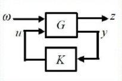
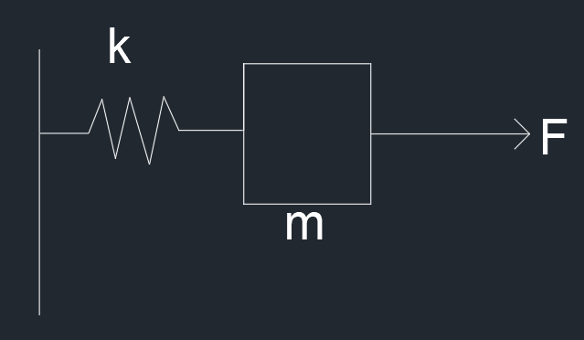

鲁棒控制理论
Table of Contents
一种典型的不确定系统模型的基本形式是
$$ y=(P+\Delta)u+n $$其中，y 是系统输出，u 是系统输入，P 是标称对象的传递函数，模型的不确定性以两种形式展现：n 是未知噪声或者干扰， $\Delta$ 是位置的对象摄动（未建模动态）
一般地说，鲁棒性概念是指反馈控制系统的某项性能对于某集合中的每一个对象都是成立的。具体地说，我们有如下鲁棒性定义。
- **鲁棒稳定性：**设计一个控制器，使对每一个摄动后的对象，都能保证闭环系统的稳定性。
- **鲁棒性能：**设计一个控制器，使对每一个摄动后的对象，闭环系统都满足稳定性和某种特定的系统性能。
上述鲁棒性的概念是指定给定一个控制器，如果某集合中的每一个对象都能保持某种特性成立，则称控制器对此特性是鲁棒的。因此鲁棒性必须包含一个控制器，有一个对象的集合和某些系统的特性
$H_\infty$ 控制器
一些定义
首先说明一些定义
$sup$：一个集合最小的上界，不小于它最大值的值，都是它的上界
$inf$：一个集合最大的下界，不大于它最小值的值，都是它的下界
$max$：最大值
$min$：最小值
$Im~f$：相当于 f 的值域
$Ker~f$：相当于 f 的零空间，也就是 $f(x)=0$ 中所有点对应的原像，这个原像不唯一，所构成的集合就是 $Ker~f$
系统的一些性能指标
-
IE 增益
$$ \Gamma_{ie}=\underset{w(t)=w_0\delta(t),||w_0||\leq1}{sup}||z||_2 $$对于原线性时不变连续时间系统，如果该系统是严格真的（D=0）和渐进稳定（矩阵A特征值均具有负实部）的，那么系统的 IE 增益是有限的，并且 $\Gamma_{ie}=\sqrt{||B^TYB||}$，其中矩阵的范数取为谱范数，即矩阵的最大奇异值，例如 A 的谱范数为 $\sqrt{\max(eig(A^TA))}$，其中 $eig$ 表示为取特征值的函数，矩阵 $Y$ 就是以下李雅普诺夫方程的解
$$ YA+A^TY+C^TC=0 $$该定理可以转化为以下的优化问题
$$ min~\gamma $$其中满足
$$ \exists P:PD\\\\ PA+A^TP+C^TC<0\\\\ B^TPB\leq\gamma I\\\\ P>0 $$该优化问题有一个最优值 $\gamma^\star$，则 $\Gamma_{ie}=\sqrt{\gamma^\star}$。该优化问题是一个具有线性不等式约束和线性目标函数的凸优化问题，以应用 LMI 工具箱中的求解器 mincx 来求解
-
EP 增益
$$ \Gamma_{ep}=\underset{||w||_2\leq1}{sup}||z||_\infty $$对于原线性时不变连续时间系统，如果该系统是严格真的（D=0）和渐进稳定（矩阵A特征值均具有负实部）的，那么系统的 EP 增益是有限的，并且 $\Gamma_{ep}=\sqrt{||CXC^T||}$，其中矩阵的范数取为谱范数，即矩阵的最大奇异值，例如 A 的谱范数为 $\sqrt{\max(eig(A^TA))}$，其中 $eig$ 表示为取特征值的函数，矩阵 $X$ 就是以下李雅普诺夫方程的解
$$ AX+XA^T+B^TB=0 $$该定理可以转化为以下的优化问题
$$ min~\gamma $$其中满足
$$ \exists Q:PD\\\\ AQ+QA^T+BB^T<0\\\\ CQC^T\leq\gamma I\\\\ Q>0 $$该优化问题有一个最优值 $\gamma^\star$，则 $\Gamma_{ep}=\sqrt{\gamma^\star}$。该优化问题是一个具有线性不等式约束和线性目标函数的凸优化问题，以应用 LMI 工具箱中的求解器 mincx 来求解
-
EE 增益
$$ \Gamma_{ee}=\underset{||w||_2\leq1}{sup}||z||_2 $$定理：对于原线性时不变连续时间系统，设 $\gamma$ 是一个给定的常数，则下列条件是等价的：
-
系统渐进稳定，且 $\Gamma_{ee}<\gamma$
-
存在一个对阵阵 $P>0$，使得
$$ \begin{bmatrix}A^TP+PA&PB&C^T\\B^TP&-\gamma I&D^T\\C&D&-\gamma I\end{bmatrix}<0 $$
由于条件 2 是一个线性矩阵不等式，因此可以应用 LMI 工具箱中的求解器 feasp 来判断系统增益 $\Gamma_{ee}$ 是否满足给定的约束条件。
-
-
PP 增益
$$ \Gamma_{pp}=\underset{||w||_\infty\leq1}{sup}||z||_\infty $$定理：对于原线性时不变连续时间系统，设 $\gamma$ 是一个给定的标量，如果存在对称矩阵 $R>0$，标量 $\gamma>0$ 和 $\mu>0$，使得：
$$ \begin{bmatrix}A^TR+RA+\gamma R&RB\\B^TR&-\mu I\end{bmatrix}<0\\\begin{bmatrix}\gamma R&0&C^T\\0&(\gamma-\mu)I&D^T\\C&D&\gamma^I\end{bmatrix}>0 $$那么满足 $\Gamma_{pp}<\gamma$，上述线性矩阵不等式，因此可以应用 LMI 工具箱中的求解器 feasp 来判断系统增益 $\Gamma_{ee}$ 是否满足给定的约束条件。
LMI矩阵不等式
不确定系统描述
其中有
$$ \left\{\begin{aligned}&\dot{x} = Ax+B_1w+B_2u\\&z = C_1x +D_{11}w+D_{12}u\\&y=C_2x+D_{21}w+D_{22}u\end{aligned}\right. $$其中 $C_1, D_{11}, D_{12}, D_{21}, D_{22}$ 是适当维数的矩阵，没有选择标准，要根据实际情况，大量实验选取。
$P$ 为增广控制对象。
$K$ 是控制器
$u$ 控制输入
$y$ 系统被测量的输出
$w$ 是外部输入或参考的输入，噪声扰动之类的
$z$ 是被控制量的输出，是系统的现时状态
则传递函数为：
$$ U=KY\\\\ Y=G_{21}W+G_{22}U=G_{21}W+G_{22}KY\\\\ Y=(1-G_{22}K)^{-1}G_{21}W\\\\ T_{WZ} = \frac{Z}{W}=G_{11}+G_{12}K(1-G_{22}K)^{-1}G_{21}=F_l(G, K) $$则有
-
$H_{\infty}$ 最优控制问题
对于标准鲁棒控制器理论控制框图，寻找一个真实有理的控制器 K，使闭环控制系统稳定，而且最小化闭环传递函数矩阵 $T_{ZW}$ 的 $H_{\infty}$ 范数，即
$$ \underset {K镇定G}{min}||T_{WZ}(G, K)||_{\infty} $$ -
$H_{\infty}$ 次最优控制问题
对于标准鲁棒控制器理论控制框图，寻找一个真实有理的控制器 K，使闭环控制系统稳定，而且使闭环传递函数矩阵 $T_{ZW}$ 的 $H_{\infty}$ 范数小于一个给定的常数 $\gamma$ ，即
$$ ||T_{WZ}(G, K)||_{\infty} < \gamma $$
Schur 补性质
给定的对称矩阵
$$ S=\begin{bmatrix}S_{11}&S_{12}\\S_{21}&S_{22}\end{bmatrix} $$其中 $S_{11}$ 是 $r\times r$ 维矩阵，所以以下三个条件是等价的
- S < 0，负定
- $S_{11} <0,S_{22}-S_{12}^TS_{11}^{-1}S_{12}<0$
- $S_{22} <0,S_{11}-S_{12}S_{11}^{-1}S_{12}^T<0$
系统范数
-
1-范数，信号的时间累计量有界
$$ \|u\|_1=\int_{-\infty}^{+\infty}|u|dt $$ -
2-范数，信号的能量有界，平放是对信号能量的一种度量
$$ \|u\|_2=\sqrt{\int_{-\infty}^{+\infty}|u|^2dt} $$ -
$\infty$-范数，信号的最大幅值有界，真确上界，即连续函数的上界， $\infty$-范数是对信号幅值的度量
$$ \|u\|_{\infty}=\underset{t\in(-\infty,+\infty)}{ess~sup}|u|<\infty $$sup 表示上确界，ess sup 表示真上确界
-
系统的 $H_\infty$ 范数对应 Bode 图中幅值曲线的峰值 $|G(jw)|$，Bode图增益最大值，离原点最大的距离
-
系统的 $H_2$ 范数对应 Bode 图中幅值曲线下方的面积。
-
Bode 图横坐标： $w=10^t, L(w)=20lg|G(jw)|$
状态反馈 $H_\infty$ 控制
控制问题的基本框图

-
闭环传递函数确定
考虑线性不变的连续时间系统，存在扰动 $w$
$$ state:\dot{x}=Ax+B_1w+B_2u\\\\ z=C_1x+D_{11}w+D_{12}u\\\\ y=C_2x+D_{21}w+D_{22}u $$寻找一个控制器 $u=Kx$，使系统保持稳定，将其带入系统中得到
$$ \dot{x}=Ax+B_1w+B_2u=(A+B_2K)x+B_1w\\\\ z=C_1x+D_{11}w+D_{12}u=(C_1+D_{12}K)x+D_{11}w $$对于系统 $w→z$ 来说，从上式中的到闭环系统传递函数为
$$ G(s)=C(sI-A)^{-1}B+D\\\\ T_{WZ}(s)=(C_1+D_{12}K)[sI-(A+B_2K)]^{-1}]B_1+D_{11} $$ -
状态反馈 $H_\infty$ 控制器
由于 EE 增益定理，可以得到，给定常数 $\gamma=1$，当且仅当存在一个对称正定矩阵 P，使得
$$ \begin{bmatrix}(A+B_2K)^TP+P(A+B_2K)&PB_1&(C_1+D_{12}K)^T\\B_1^TP&-I&D_{11}^T\\C_1+D_{12}K&D_{11}&-I\end{bmatrix}<0 $$为了求得未知矩阵 $K$ 和 $P$，使用变量替换法，将其转化为一个等价的关于新变量的线性矩阵不等式
首先，分别对其左乘和右乘一个对角阵 $diag\{P^{-1},I,I\}$，则得到
$$ \begin{bmatrix}P^-1\\&I\\&&I\end{bmatrix}\begin{bmatrix}(A+B_2K)^TP+P(A+B_2K)&PB_1&(C_1+D_{12}K)^T\\B_1^TP&-I&D_{11}^T\\C_1+D_{12}K&D_{11}&-I\end{bmatrix}\begin{bmatrix}P^-1\\&I\\&&I\end{bmatrix}<0\\\\\Downarrow\\\\\begin{bmatrix}(AP^{-1}+B_2KP^{-1})^T+(AP^{-1}+B_2KP^{-1})&B_1&(C_1P^{-1}+D_{12}KP^{-1})^T\\B_1^T&-I&D_{11}^T\\C_1P^{-1}+D_{12}KP^{-1}&D_{11}&-I\end{bmatrix}<0 $$定义 $X=P^{-1}$ 和 $W=KX$，得到
$$ \begin{bmatrix}(AX+B_2W)^T+(AX+B_2W)&B_1&(C_1X+D_{12}W)^T\\B_1^T&-I&D_{11}^T\\C_1X+D_{12}W&D_{11}&-I\end{bmatrix}<0 $$对于原线性定常系统，存在一个状态反馈 $H_\infty$ 控制器，当且仅当存在一个对称正定矩阵 X 和矩阵 W ( W 不对称正定)，使得上式和 $X>0$ 成立，并且可行解 $X^\star$和 $W^\star$ 组成的 $u=W^\star(X^\star)^{-1}x$ 是系统的的一个状态反馈 $H_\infty$ 控制器。该矩阵的不等式是 $X$ 和 $W$ 的一个线性矩阵不等式，可以利用 LMI 工具箱的求解器 feasp 来求解
-
状态反馈 $\gamma-$次优 $H_\infty$ 控制器
对于一个给定的标量 $\gamma >0$，为了求系统的状态反馈 $\gamma-$次优 $H_\infty$ 控制器，由于
$$ ||T_wz(s)||_\infty<\gamma $$可以得到
$$ ||\gamma^{-1}T_{wz}(s)||_\infty<1 $$也就是
$$ ||\gamma^{-1}(C_1+D_{12}K)[sI-(A+B_2K)]^{-1}]B_1+D_{11}||_\infty<1 $$所以可以通过使用 $\gamma^{-1}C_1,\gamma^{-1}D_{12},\gamma^{-1}D_{11}$来替换先前的 $C_1,D_{12},D_{11}$，解算方法与上述一致。可以得到
$$ \begin{bmatrix}(AX+B_2W)^T+(AX+B_2W)&B_1&\gamma^{-1}(C_1X+D_{12}W)^T\\B_1^T&-I&\gamma^{-1}D_{11}^T\\\gamma^{-1}(C_1X+D_{12}W)&\gamma^{-1}D_{11}&-I\end{bmatrix}<0 $$将上式分别左乘和右乘一个对角矩阵 $diag\{I,I,\gamma I\}$，得到
$$ \begin{bmatrix}(AX+B_2W)^T+(AX+B_2W)&B_1&(C_1X+D_{12}W)^T\\B_1^T&-I&D_{11}^T\\(C_1X+D_{12}W)&D_{11}&-\gamma^{2}I\end{bmatrix}<0 $$存在一个状态反馈 $\gamma-$次优 $H_\infty$ 控制器，当且仅当存在一个对称正定矩阵 X 和矩阵 W ( W 不对称正定)，使得上式和 $X>0$ 成立，并且可行解 $X^\star$和 $W^\star$ 组成的 $u=W^\star(X^\star)^{-1}x$ 是系统的的一个状态反馈 $H_\infty$ 控制器。该矩阵的不等式是 $X$ 和 $W$ 的一个线性矩阵不等式，可以利用 LMI 工具箱的求解器 feasp 来求解
-
状态反馈最优 $H_\infty$ 控制器
基于状态反馈 $\gamma-$次优 $H_\infty$ 控制器的存在条件，建立一个优化问题
$$ \min\rho\\\begin{bmatrix}(AX+B_2W)^T+(AX+B_2W)&B_1&(C_1X+D_{12}W)^T\\B_1^T&-I&D_{11}^T\\(C_1X+D_{12}W)&D_{11}&-\rho I\end{bmatrix}<0\\X>0 $$该问题是一个具有线性矩阵不等式约束和线性目标函数的凸优化问题，可以应用LMI工具箱的求解mincx来求解。如果该问题有解，就可以得到系统的状态反馈最优 $H_\infty$ 控制器。
输出反馈 $H_\infty$ 控制
-
设计思路
当系统状态难以测量时，可以选择输出反馈的控制方式，所以就是设计出一个输出反馈控制器 $u=Ky$ 使得原线性定常系统渐进稳定且闭环传递函数 $||T_{WZ}(s)||_\infty<1$。
首先需要假定 $(A,B_2,C_2)$ 是能稳能检测的， $D_{22}=0$，将 $u=Ky$ 写成状态空间方程的形式
$$ \dot{\hat x}=A_K\hat{x}+B_Ky\\\\ u=C_K\hat{x}+D_Ky $$其中 $\hat{x}$ 是控制器的状态，而 $A_K,B_K,C_K,D_K$ 是待确定的控制器参数矩阵，将其带入原系统得到新的广义闭环系统
$$ \begin{bmatrix}\dot{x}\\\dot{\hat x}\end{bmatrix}=\begin{bmatrix}A+B_2D_KC_2&B_2C_K\\B_KC_2&A_K\end{bmatrix}\begin{bmatrix}x\\\hat{x}\end{bmatrix}+\begin{bmatrix}B_1+B_2D_KD_{21}\\B_KD_{21}\end{bmatrix}w\\\\ z=\begin{bmatrix}C_1+D_{12}D_KC_2&D_{12}C_K\end{bmatrix}\begin{bmatrix}x\\\hat{x}\end{bmatrix}+(D_{11}+D_{12}D_KD_{21})w $$简化为
$$ \dot{x}_a=A_cx_a+B_cw\\\\ z=C_cx_a+D_cw $$由于 EE 增益定理，可以得到，给定常数 $\gamma=1$，当且仅当存在一个对称正定矩阵 $X_c$，使得
$$ \begin{bmatrix}A_c^TX_c+X_cA_c&X_cB_c&C_c\\B_c^TX_c&-I&D_c^T\\C_c&D_c&-I\end{bmatrix}<0 $$但是可以看到，由于 $A_c,B_c,C_c,D_c$ 等的存在，使得上述 LMI 为非线性，MATLAB计算非常困难，所以需要转化成线性矩阵，主要有两种方法：消去法和变量替代法。
-
消元法设计输出反馈 $H_\infty$ 控制器
定义一个矩阵，这个矩阵将控制器中的待定的参数矩阵集中在一起，这也是输出反馈 $H_\infty$ 控制器设计问题中最终要确定的矩阵
设计所需要的输出反馈 $H_\infty$ 控制器
- 求解满足下面定理的矩阵 X 和 Y
- 求解满足 $X-Y^{-1}=X_2X_2^T$ 的矩阵 $X_2\in R^{n\times n_K}$，其中 $n_K$ 可以是矩阵 $X-Y^{-1}$ 的秩
- 用 $X$ 和 $X_2$ 构造 $X_{c}=\begin{bmatrix}X&X_2^T\\X_2&I\end{bmatrix}$
- 将矩阵 $X_c$ 带入到矩阵不等式 $H_{X_c}+P_{X_c}^TKQ+Q^TK^TP_{X_c}<0$ 中，求解将矩阵变量 K
其中
$$ A_0=\begin{bmatrix}A&0\\0&0\end{bmatrix},B_0=\begin{bmatrix}B_1\\0\end{bmatrix},C_0=\begin{bmatrix}C_1&0\end{bmatrix}\\\overline{B}=\begin{bmatrix}0&B_2\\I&0\end{bmatrix},\overline{C}=\begin{bmatrix}0&I\\C_2&0\end{bmatrix},\overline{D}_{12}=\begin{bmatrix}0&D_{12}\end{bmatrix},\overline{D}_{21}=\begin{bmatrix}0\\D_{21}\end{bmatrix}\\H_{X_c}=\begin{bmatrix}A_0^TX_{c}+X_cA_0&X_cB_0&C_0^T\\B_0^TX_c&-I&D_{11}^T\\C_0&D_{11}&-I\end{bmatrix}\\P_{X_c}=\begin{bmatrix}\overline{B}^TX_c&0&\overline{D}_{12}^T\end{bmatrix}\\Q=\begin{bmatrix}\overline{C}&\overline{D}_{21}^T&0\end{bmatrix} $$定理：原线性定常系统存在一个输出反馈 $H_\infty$控制器，当且仅当存在两个对称正定矩阵 X，Y ，使得
$$ 1.~\begin{bmatrix}N_0&0\\0&I\end{bmatrix}^T\begin{bmatrix}A^TX+XA&XB_1&C_1^T\\B_1^TX&-I&D_{11}^T\\C_1&D_{11}&-I\end{bmatrix}\begin{bmatrix}N_0&0\\0&I\end{bmatrix}<0 $$$$ 2.~\begin{bmatrix}N_c&0\\0&I\end{bmatrix}^T\begin{bmatrix}AY+YA^T&YC_1^T&B_1\\C_1Y&- I&D_{11}\\B_1^TC_1&D_{11}^T&- I\end{bmatrix}\begin{bmatrix}N_c&0\\0&I\end{bmatrix}<0 $$$$ 3.~\begin{bmatrix}X&I\\I&Y\end{bmatrix}\geq 0 $$其中， $N_0,N_c$ 分别是以子空间 $ker([C_2~ D_{21}])$ 和 $ker([B_2^T~ D_{12}^T])$ 中任意一组基向量作为列所构成的矩阵，即满足 $ImN_o=ker([C_2~ D_{21}])$和 $ImN_c=ker([B_2^T~ D_{12}^T])$ 的矩阵 $N_o,N_c$。如果核空间 $ker([C_2~ D_{21}])$ 和 $ker([B_2^T~ D_{12}^T])$ 中有任意一个等于零空间，则在定理条件中可以删去相应的线性矩阵不等式。若系统不存在控制输入和测量输出，则可以在系统模型中取 $B_2=0,C_2=0,D_{12}=0,D_{21}=0$，因此相应的 $N_o=I,N_c=I$。这种情况下，上述的不等式变作
$$ 1.~\begin{bmatrix}A^TX+XA&XB_1&C_1^T\\B_1^TX&-I&D_{11}^T\\C_1&D_{11}&-I\end{bmatrix}<0 $$$$ 2.~\begin{bmatrix}AY+YA^T&YC_1^T&B_1\\C_1Y&- I&D_{11}\\B_1^TC_1&D_{11}^T&- I\end{bmatrix}<0 $$$$ 3.~\begin{bmatrix}X&I\\I&Y\end{bmatrix}\geq 0 $$相应的上述的设计步骤也会发生改变
其中第四步变为
$$ A_0=\begin{bmatrix}A&0\\0&0\end{bmatrix}\\\\ \overline{B}=\begin{bmatrix}0&B_2\\I&0\end{bmatrix}\\\\ \overline{C}=\begin{bmatrix}0&I\\C_2&0\end{bmatrix}\\\\ H_{X_c}=\begin{bmatrix}A_0^TX_{c}+X_cA_0&0&0\\0&-I&0\\0&0&-I\end{bmatrix}\\\\ P_{X_c}=\begin{bmatrix}\overline{B}^TX_c&0&0\end{bmatrix}\\\\ Q=\begin{bmatrix}\overline{C}&0&0\end{bmatrix}\\\\ \Downarrow\\\\ H_{X_c}+P_{X_c}^TKQ+Q^TK^TP_{X_c}<0 $$控制器 K 便可以获得可以使用 LMI 工具箱的求解器 feasp 来求解
-
变量替代法设计输出反馈 $H_\infty$ 控制器
将矩阵 $X_c$ 和它的逆矩阵进行以下分块
$$ X_c=\begin{bmatrix}Y&N\\N^T&W\end{bmatrix}~X_c^{-1}=\begin{bmatrix}X&M\\M^T&Z\end{bmatrix} $$其中， $X,Y\in R^{n\times n}$ 是对称矩阵。从等式 $X_cX_c^{-1}=I$ 可以得到
$$ X_c\begin{bmatrix}X\\M^T\end{bmatrix}=\begin{bmatrix}I\\0\end{bmatrix} $$进一步得到
$$ X_c\begin{bmatrix}X&I\\M^T&0\end{bmatrix}=\begin{bmatrix}I&Y\\0&N^T\end{bmatrix} $$定义
$$ F_1=\begin{bmatrix}X&I\\M^T&0\end{bmatrix},F_1=\begin{bmatrix}I&Y\\0&N^T\end{bmatrix} $$也就是 $X_cF_1=F_2$，进一步利用矩阵的运算，可以得到
$$ F_1^TX_cA_cF_1=F_2^TA_cF_1\\=\begin{bmatrix}AX+B_2(D_KC_2X+C_KM^T)&A+B_2D_KC_2\\Y(A+B_2D_KC_2)X+NB_KC_2X+YB_2C_KM^T+NA_KM^T&YA+(YB_2D_K+NB_K)C_2\end{bmatrix}\\\\ F_1^TX_cB_c=\begin{bmatrix}B_1+B_2D_KD_{21}\\YB_1+(YB_2D_K+NB_K)D_{21}\end{bmatrix}\\\\ C_cF_1=\begin{bmatrix}C_1X+D_{12}(D_KC_2X+C_KM^{-1})&C_1+D_{12}D_KC_2\end{bmatrix}\\\\ F_1^TX_cF_1=F_2^TF_1=\begin{bmatrix}X&I\\I&Y\end{bmatrix} $$为了找到一个适当的变量替换，能够将矩阵不等式非线性的LMI转化为一个等价的线性矩阵不等式。结合以上得到的关系式，定义以下的变量替换公式
$$ \hat{A}=Y(A+B_2D_KC_2)X+NB_KC_2X+YB_2C_KM^T+NA_KM^T\\\\ \hat{B}=YB_2D_K+NB_K\\\\ \hat{C}=D_KC_2X+C_KM^T\\\\ \hat{D}=D_K $$可以看到，只要在确定矩阵 $M,N$ 的前提下，从定义的变量替换公式可以确定控制器参数。所以非线性 LMI 可以转化为
$$ \begin{bmatrix}AX+XA^T+B_2\hat{C}+(B_2\hat{C})^T&\hat{A}^T+(A+B_2\hat{D}C_2)&B_1+B_2\hat{D}D_{21}&(C_1X+D_{12}\hat{C})^T\\0&A^TY+YA+\hat{B}C_2+(\hat{B}C_2)^T&YB_1+\hat{B}D_{21}&(C_1+D_{12}\hat{D}C_2)^T\\0&0&-I&(D_{11}+D_{12}\hat{D}D_{21})^T\\0&0&0&-I\end{bmatrix}<0 $$现在求出矩阵 $M,N$ 就能确定控制器参数。
根据恒等式 $X_c^TX_c=I$，可得
$$ MN^T=I-XY $$可以通过矩阵 $I-XY$ 的奇异值分解来得到满秩矩阵 $M,N$， $X_c>0$ 保证了
$$ \begin{bmatrix}X&I\\I&Y\end{bmatrix}>0 $$由此可以得到 $I-XY>0$，所以 $M,N$ 总是可以通过奇异值分解得到。控制器参数
$$ D_K=\hat{D}\\\\ C_K=(\hat{C}-D_KC_2X)(M^T)^{-1}\\\\ B_K=N^{-1}(\hat{B}-YB_2D_K)\\\\ A_K=N^{-1}[\hat{A}-Y(A+B_2D_KC_2)X](M^T)^{-1}-B_KC_2X(M^T)^{-1}-N^{-1}YB_2C_K $$所以通过变量替代法将上述非线性 LMI 输出反馈问题转化为如下线性 LMI 问题
$$ \begin{bmatrix}AX+XA^T+B_2\hat{C}+(B_2\hat{C})^T&\hat{A}^T+(A+B_2\hat{D}C_2)&B_1+B_2\hat{D}D_{21}&(C_1X+D_{12}\hat{C})^T\\0&A^TY+YA+\hat{B}C_2+(\hat{B}C_2)^T&YB_1+\hat{B}D_{21}&(C_1+D_{12}\hat{D}C_2)^T\\0&0&-I&(D_{11}+D_{12}\hat{D}D_{21})^T\\0&0&0&-I\end{bmatrix}<0\\\begin{bmatrix}X&I\\I&Y\end{bmatrix}>0\\MN^T=I-XY $$可得控制器
$$ D_K=\hat{D}\\\\ C_K=(\hat{C}-D_KC_2X)(M^T)^{-1}\\\\ B_K=N^{-1}(\hat{B}-YB_2D_K)\\\\ A_K=N^{-1}[\hat{A}-Y(A+B_2D_KC_2)X](M^T)^{-1}-B_KC_2X(M^T)^{-1}-N^{-1}YB_2C_K $$如上的控制器是状态空间的实行，实际上可以通过
K = pck(Ak,Bk,Ck,Dk)指令得到一个增益的形式， -
输出反馈 $\gamma-$次优 $H_\infty$ 控制器
对于一个给定的标量 $\gamma>0$，为了求解系统的状态反馈 $\gamma-$次优 $H_\infty$ 控制器，当且仅当存在两个对称正定矩阵 $X,Y$，使得崩坏星穷铁道
$$ 1.~\begin{bmatrix}N_0&0\\0&I\end{bmatrix}^T\begin{bmatrix}A^TX+XA&XB_1&C_1^T\\B_1^TX&-\gamma I&D_{11}^T\\C_1&D_{11}&-\gamma I\end{bmatrix}\begin{bmatrix}N_0&0\\0&I\end{bmatrix}<0 $$$$ 2.~\begin{bmatrix}N_c&0\\0&I\end{bmatrix}^T\begin{bmatrix}AY+YA^T&YC_1^T&B_1\\C_1Y&-\gamma I&D_{11}\\B_1^TC_1&D_{11}^T&-\gamma I\end{bmatrix}\begin{bmatrix}N_c&0\\0&I\end{bmatrix}<0 $$$$ 3.~\begin{bmatrix}X&I\\I&Y\end{bmatrix}\geq 0 $$其中， $N_0,N_c$ 分别是以子空间 $ker([C_2~D_{21}])$ 和 $ker([B_2^T~D_{12}^T])$ 中任意一组基向量作为列所构成的矩阵。可以使用 LMI 工具箱的求解器 feasp 来求解
-
输出反馈最优 $H_\infty$ 控制器
基于输出反馈 $\gamma-$次优 $H_\infty$ 控制器存在的条件，建立一个优化问题
$$ \min\rho\\\begin{bmatrix}N_0&0\\0&I\end{bmatrix}^T\begin{bmatrix}A^TX+XA&XB_1&C_1^T\\B_1^TX&-\rho I&D_{11}^T\\C_1&D_{11}&-\rho I\end{bmatrix}\begin{bmatrix}N_0&0\\0&I\end{bmatrix}<0\\\begin{bmatrix}N_c&0\\0&I\end{bmatrix}^T\begin{bmatrix}AY+YA^T&YC_1^T&B_1\\C_1Y&-\rho I&D_{11}\\B_1^TC_1&D_{11}^T&-\rho I\end{bmatrix}\begin{bmatrix}N_c&0\\0&I\end{bmatrix}<0\\\begin{bmatrix}X&I\\I&Y\end{bmatrix}\geq 0 $$该问题是一个具有线性矩阵不等式约束和线性目标函数的凸优化问题，可以应用LMI工具箱的求解mincx来求解。如果该问题有解，就可以得到系统的状态反馈最优 $H_\infty$ 控制器。
-
连续时间系统 $H_\infty$ 控制器综合问题求解器
hinflmi在
matlab中可以使用ltisys和hinflmi函数来求解1 2 3 4 5B=[B1 B2];C=[C1;C2];D=[D11,D12;D21,D22]; gamma; G=ltisys(A,B,C,D); [gopt,K]=hinflmi(G,[1 1],gamma); [Ak,Bk,Ck,Dk]=ltiss(K)得到满足 $H_\infty$性能 $\gamma
hinflmi函数的基本用法是[gopt,K]=hinflmi(system,[p m])，通过mincx来优化系统的 $H_\infty$ 性能指标，其中p是系统测量输出的个数，m是系统控制输入的个数，K是最优 $H_\infty$ 控制器系统矩阵，可通过ltiss函数得到其状态空间实现。
控制器设计
图中的 y 是系统观测量，而 u 是对系统的输入值，K 就是对反馈处理的反馈控制器。要使用两个测量量，即系统加速度和系统的行程，u 是控制系统的加速度来控制系统的，也即这个系统是个二阶系统。当然也可以是一阶系统。对于 w 就是来自于系统外部的输入，例如干扰，噪声和参考信号之类的。对于 z 是一些系统输出的错误信号，可以是真实的也可以是虚拟的，在模型中临时使用来设计控制器， $z=\begin{bmatrix}x\\\ddot{x}\\f\end{bmatrix}$，这里使用的是系统的输出和加速度，还有系统驱动力。当干扰输入到系统中之后，在系统 P 种会将干扰放大，而执行器的目标是使干扰的放大最小化，并且在执行过程中使执行力最小，这就是 $H_{\infty}$ 做的，是一种优化，用于计算控制器以最小化 w 和 z 之间得到增益的过程。当然对于系统的控制不一定每一个状态量都重要，所以给 w 和 z 添加加权因子来设置模型的重要性
例子
状态反馈控制
对于一个滑块弹簧系统

可以得到系统状态方程，假设力的最终作用在滑块上存在噪声 w，满足条件，定义噪声 $-0.05\leq w\leq 0.05,random$
$$ \begin{bmatrix}\dot{x_1}\\\dot{x_2}\end{bmatrix}=\begin{bmatrix}0&1\\\frac{k}{m}&0\end{bmatrix}\begin{bmatrix}x_1\\x_2\end{bmatrix}+\begin{bmatrix}0\\\frac{1}{m}\end{bmatrix}u+\begin{bmatrix}1\\1\end{bmatrix}w $$$$ z=\begin{bmatrix}1&0\end{bmatrix}\begin{bmatrix}x_1\\x_2\end{bmatrix}\\y=\begin{bmatrix}1&0\end{bmatrix}\begin{bmatrix}x_1\\x_2\end{bmatrix}+\begin{bmatrix}0\end{bmatrix}w $$$$ \dot{x}=Ax+B_1w+B_2u $$$$ z=C_1x $$$$ y=C_2x+D_{21}w $$将 $u=Kx$ 带入其中，得到
$$ \dot{x}=(A+B_2K)x+B_1w $$$$ z=C_1x $$$$ y=C_2+D_{21}w $$得到传递函数
$$ T_{WZ}(s)=C_1[sI-(A+B_2K)]^{-1}B_1 $$根据之前的过程可以得到
$$ \begin{bmatrix}(AX+B_2W)^T+(AX+B_2W)&B_1&(C_1X)^T\\B_1^T&-I&0\\C_1X&0&-I\end{bmatrix}<0 $$当且仅当存在一个对称正定矩阵X和矩阵W(W不对称正定)，使得上述不等式和 $X>0$ 成立，并且得到控制器 $u=W^\star(X^\star)^{-1}x$ 是系统的一个状态反馈控制器
$$ \begin{bmatrix}(AX+B_2W)^T+(AX+B_2W)&B_1&(C_1X+D_{12}W)^T\\B_1^T&-I&D_{11}^T\\(C_1X+D_{12}W)&D_{11}&-\gamma^{2}I\end{bmatrix}<0 $$系统次优 $H_\infty$ 控制器
$$ \min\rho\\\begin{bmatrix}(AX+B_2W)^T+(AX+B_2W)&B_1&(C_1X+D_{12}W)^T\\B_1^T&-I&D_{11}^T\\(C_1X+D_{12}W)&D_{11}&-\rho I\end{bmatrix}<0\\X>0 $$系统最优 $H_\infty$ 控制器
设定 $k=1,m=1$，并将其放入matlab中求解
参考文章
鲁棒控制-线性矩阵不等式处理方法——俞立
H∞输出反馈控制器推导(最后含例子及程序)_h无穷控制器-CSDN博客
持续更新中…